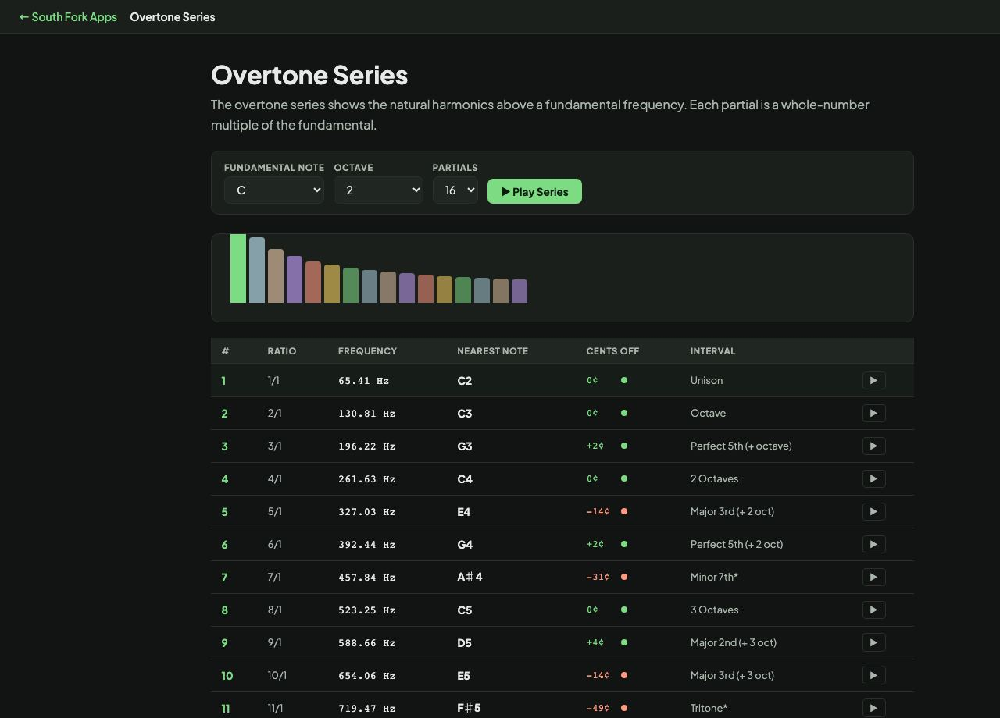

Overtone Series
The overtone series shows the natural harmonics above a fundamental frequency. Each partial is a whole-number multiple of the fundamental.
| # | Ratio | Frequency | Nearest Note | Cents Off | Interval |
|---|
Overtone Series
Overtone Series lets you pick a fundamental note and see and hear the harmonics stacked above it, which is where musical timbre actually comes from.
How to use it
- Select a fundamental note.
- Read the harmonics above it with their intervals.
- Listen to how each harmonic relates to the fundamental.
The series, and why instruments sound different
A vibrating string or air column does not produce one frequency. It produces the fundamental plus whole-number multiples of it. The second harmonic is an octave up, the third is an octave plus a fifth, the fourth is two octaves, the fifth adds a major third, and the sixth another fifth.
That is why a major chord sounds consonant: its intervals are already present in every single note you play. It is also why instruments differ. A flute and a violin playing the same pitch have the same fundamental and completely different balances of harmonics above it, and that balance is what your ear identifies as tone.
Worked example
The first six harmonics over a low C:
- 1stC, the fundamental
- 2ndC, one octave up
- 3rdG, an octave and a fifth
- 4thC, two octaves
- 5thE, adding the major third
Result: By the fifth harmonic the series has spelled out a C major chord on its own.
When it helps
- Understanding why some intervals sound consonant and others do not.
- Learning the basis of synthesis, where timbre is built by shaping harmonics.
- Understanding brass instruments, which play the series by changing embouchure alone.
- Explaining why the seventh harmonic sounds flat against equal temperament.
Common mistakes
- Expecting the harmonics to match piano notes exactly. The seventh in particular sits noticeably flat of the equal-tempered minor seventh.
- Confusing harmonics with overtones by number. The second harmonic is the first overtone, which is a persistent source of off-by-one confusion.
